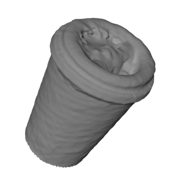
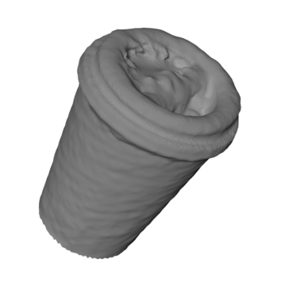

This dataset is made to address bin-picking problems and consists of scenes representing objects cluttered in pile. Each scene contains 20 instances of the same object class that are dropped in a confined space. Variable number of objects are visible in a scene because of occlusion. It is designed for the purpose of training pose estimation algorithms based on depth data.
The dataset is generated using Blender. The surface on which the objects are dropped is flat but with some spherical obstacles present. This is done to encourage more random orientation of the collected objects without which the objects tend to collect in a highly imbalanced pose distribution. The intution behind this is the fact that objects with flat faces will preferably land on them.
The dataset contains depth images and an additional 2400 scenes of brick model with RGB-D images
 

Ground truth pose annotations for a dataset are provided in txt format for the scenes follows:
'-'
Cube 250 402 189 55 18.681072 -28.967299 43.579296 -102.995496 8013 356 123 92 132
Cube.001 250 491 209 53 -36.077515 -22.787905 31.588846 35.072519 7854 425 166 135 83
Cube.002 250 544 322 57 39.642689 2.072795 41.372906 -127.725057 2647 484 271 119 105
Cube.003 250 476 196 57 -25.013243 -23.279526 -46.309265 93.434276 1065 417 140 118 115
...
Cube.016 250 530 413 56 56.070675 8.504059 -4.253003 9.708734 3166 494 386 76 58
Cube.017 250 440 299 56 12.222869 25.910168 47.998520 83.185338 7726 385 236 113 128
Cube.018 250 494 300 59 -0.341590 -58.520817 -1.826897 -35.508480 1079 439 254 111 94
Cube.019 250 453 383 55 -46.252174 26.885469 -15.495949 1.887654 5508 398 350 108 72
In this example, the scene contains twenty object instances. '-' denotes the start of a new scene. Each column has the following information:
ID sID cX cY D TX TY TZ Ψ Vis bX bY bW bH
where, centroid is the pixel coordinate of the centroid of the instance, depth is the actual depth in cm, trans is the translation of the camera with respect to the instance, yaw is the in-plane rotation angle, visibility is the count of the visible pixels for the instance and bbox are the pixel coordinates, width and height of the 2D bounding box for the instance.
width 960
height 540
fu 1050
fv 1050
cu 480
cv 270
clip_start 0.1
clip_end 100
The data can be downloaded as a set of 3 zip archives here. The code to generate the dataset can be downloaded from here.
3D models of the tless objects used in this dataset are taken from the T-LESS dataset of T. Hodaň et al. The coffee cup model has been downloaded from this dataset by Doumanoglou et al. (Dataset-scenario 2).
For any inquiries or feedback please contact: